2.4.2.8 Yolluk burcu
Silindirik bir parça genellikle kalýbýn diþi kýsmýna yerleþtirilir. Enjeksiyon ünitesinin kalýbý doldurmasý için, giriþ noktasýdýr. Diðer görevi de makine memesi ile burç arasýndaki sýzýntýyý en aza indirmektir. Ýçeri eðimli baþ kýsmýna sahiptir. Bu kýsým çok iyi parlatýlýr. Eðlendirilerek soðumuþ yolluk giriþinin kalýp açýlmasý esnasýnda, parçanýn makineden ayrýlmasýný saðlar. Kalýbýn erkek kýsmýyla beraber atýlmasýný saðlar.
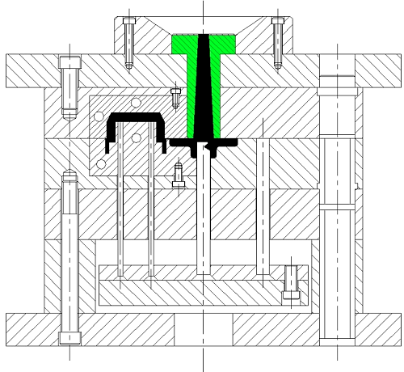
Þekil 24 Yolluk Burcu
2.4.2.9 Yolluk flanþý
Diþi kalýp plakasýnýn arkasýna açýlmýþ yuvarlak boþluk içine konulan merkezleme halkasýdýr. Bunun fonksiyonu kalýbý sabit plakaya yerleþtirmektir. Bu sabitleme halkasý hassas bir parçadýr. Enjeksiyon ünitesi ile yolluk burcunun ayný merkezde olmasýný saðlar. Olmamasý halinde kullanýmý esnasýnda memeden polimer sýzmasý olur. Sabitleme halkasý ilave olarak, yolluk burcunun üzerinde yerleþtirilebilir
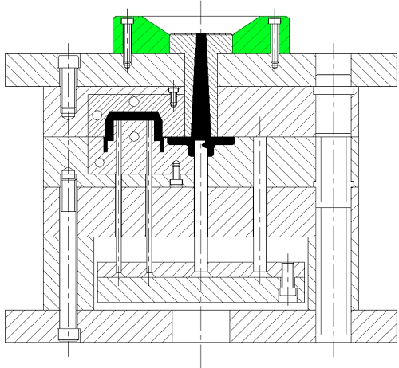
Þekil 25 Yolluk Flanþý
2.4.2.10 Baðlantý plakalarý
Burada kalýp ayýrým çizgisi kalýbýn erkek ve diþi kýsmýnýn yapýlma hassasiyetine baðlýdýr. Sonuç olarak; arka plakanýn ayrým çizgisine baðlýdýr. Arka plaka genellikle aþaðýdaki fonksiyonlar için kullanýlýr:
- Her iki kalýp parçasýný bir arada tutan baðlantý yeri olarak,
- Kalýbý makine plakasýna baðlamak için yer temin etmesi,
- Kalýp yapýmýnda sertliði saðlamasý,
- Baðlantý destek kalýplarýnýn boyutu bir kalýptan diðerine standardize edilir
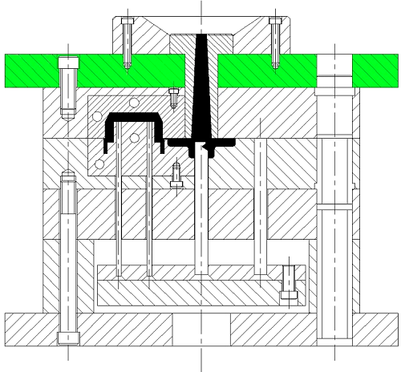
Þekil 26 Üst Baðlantý Plakasý
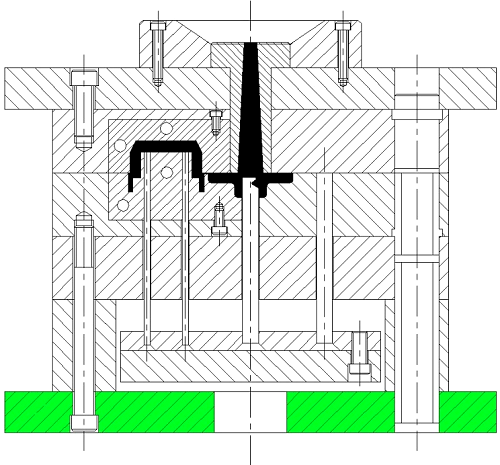
Þekil 27 Alt Baðlantý Plakasý
2.4.2.11 Kýlavuz Pimler
Sulanmýþ ve taþlanmýþ pimler plakalarýn birine pres edilmiþtir. Kalýp takýmýnýn iki yarým kýsýmlarýný tam ayarýnda (saða-sola kaçmamalarý için) tutar.
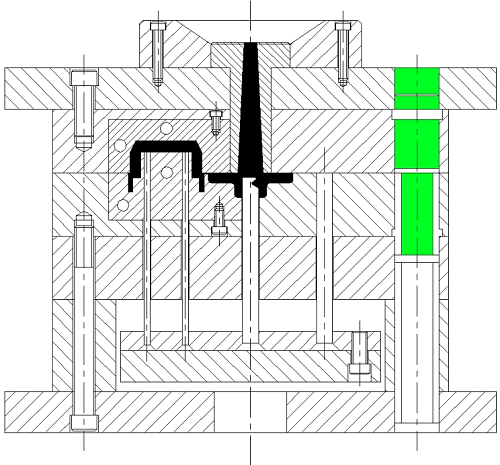
Þekil 28 Kolon Pimi
2.4.2.12 Burçlar
Sulanmýþ ve taþlanmýþ burçlar plakalarýn birine pres edilmiþtir. kýlavuz pimlere yataklýk yaparlar.
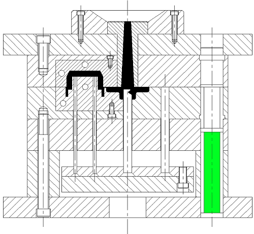
Þekil 29 Burç
* Çekme mukavemeti en yüksek termoplastiklerden biridir ve çekme gerilimi 3,5 kg/mm²’dir. Bu lastik katký maddeleriyle güçlendirildiðinde çekme gerilimi 112,5 kg/ mm²’den 386 kg/mm²’ye kadar yükseltilebilir.
* Kýrýlganlýðý azdýr.
* Ýyi bir aþýndýrma özelliðine sahiptir ve sürtünme kat sayýsý ortadadýr.
* Isýya karþý dirençlidir ve 150 Cº’nin altýndaki buhardan etkilenmez.
* Açýk havaya karþý yüksek dirençlidir.
* Kimyasal asitlere karþý dirençlidir ve sulandýrýlmýþ asitlerden etkilenmez.
* Elektrik iletkenliði olmadýðý için iyi bir izolasyon malzemesidir.
* Yoðunluðu az olan (0,89 g/cm³) termoplastiklerdendir.
* Kolayca kaynak edilebilir, talaþlý iþlenebilir. Uygun yapýþtýrýcýlarla yapýþtýrýlabilir, baský ve markalama yapýlabilir.
En çok ev aletlerinin yapýmýnda, hastane ve fizik laboratuvarý aletleri, pil koruyucu kutusu, taþýma çantasý, sandalye ve sehpa, çöp sepeti, çamaþýr makinesi merdanesi pedal, su tesisatý baðlantý elemanlarý (manþon, körtapa vb), otomotiv sanayiinde kopolimer olarak akümülatör gövdesi, elektrik kablosu, ayakkabý topuðu, halat ve boru yapýmýnda kullanýlýr.
* Yoðunluðu 1,2 g/cm³’tür.
* Boyutsal ölçülerinde deðiþiklik olmayan en iyi termoplastiklerdendir. Çekme payý % 0,0125 mm’den azdýr.24
* 140 Cº’ye kadar sýcaklýklara karþý dayanýklýdýr.
* Þeffaftýr ve ýþýk kýrýlma indeksi 1,586’dýr.
* Mekanik özellikleri çok iyidir, çekme dayanýmý 668 kg/cm²’dir.
* 60 Cº’ye kadar olan sýcak sudan etkilenmez. Ayrýca gres, makine yaðý, deterjan ve asitlere karþý dirençlidir.
* Elektrik iletkenliði yoktur. Bu nedenle iyi bir izolasyon malzemesidir ve rutubetten etkilenmez.
* Þeffaf olmasýna raðmen bütün renkler verilebilir.
* Iþýktan ve açýk havadan etkilenmeyen bir malzemedir.
Hafif, dayanýklý ve saydam oluþu nedeniyle sinyal lambalarý dahil otomotiv sanayiinde, sokak ve trafik lamba kapaklarý, pencere camý, elektronik ve telekomünikasyon parçalarý, büro ve iþ makineleri gövdeleri, gýda ambalajýnda, ev alet ve takýmlarý, reklam panolarý, inþaat ve dekorasyon yapýmýnda kullanýlmaktadýr.
2.5.3.1.1.Özellikleri
* Süt beyaz renktedir.
* Kimyasal maddelere ve korozyona dayanýklýdýr.
* Iþýða ve açýk havaya dayanýklý deðildir. Katký maddeleri katýlarak bu problem ortadan kalkar.
* 80-85 Cº’ye kadar kullanýlabilir. Yüksek sýcaklýkta giderek yumuþar ve parçalanýr.
* Yoðunluðu 0,91 g/cm³’tür.
* Mekanik dayanýmý orta derecede olup uzamasý ve darbe dayanýmý yüksektir. Çekme dayanýmý 100-300 kg/cm²’dir.
* Elektrik yalýtýmý çok iyi olup yüksek frekanslý yerlerde teflon grubu plastiklerden hemen sonra gelen uygun bir malzemedir.
* Levha ve parça halinde sýcak hava ve diðer yöntemlerle kaynak edilebilir. Sýcak dikiþle yapýþtýrýlabilir.
2.5.3.1.2.Uygulama Alanlarý
* Ambalaj torbalarý, sera örtüleri, þiþe, bidon, beyaz eþya, oyuncak, çeþitli makine parçalarý yapýmýnda kullanýlýr.25
2.5.3.2.1.Özellikleri
Suya, kimyasal maddelere karþý direnci iyidir.
* Iþýða ve açýk havaya karþý dayanýklý deðildir. Katký maddeleri katýlarak bu problem ortadan kalkar.
* Mekanik özellikleri çok iyi olup özellikle darbe ve çekme dayanýmlarý yüksektir.
* Çekme dayanýmý 225-350 kg/cm², sýcaklýk dayanýmý 100 Cº üzerindedir.
* Elektriksel uygulamalara da çok elveriþlidir.
2.5.3.2.2. Uygulama Alanlarý
* Basýnçlý borular, gaz daðýtým borularý, þiþe, bidon, beyaz eþya, makine parçalarý, oyuncak, elektrik ve elektronik eþya, suya dayanýklý olduðundan tekne, depo ve poþet torba yapýmýnda kullanýlýr.
* Yoðunluðu 1.4 g/cm³’tür.
* Kimyasal etkilere ve aþýnmaya karþý direnci fazladýr.
* Kolayca renklendirilebilir.
* Çekme dayanýmý 140-240 kg/cm²’dir.
* Açýk havadan etkilenmez ve su emme özelliði yok denecek kadar azdýr.
* Elektrik yalýtma özelliði iyidir.
* Yalýtým malzemesi olarak ince zil tellerinde, kalýn yer altý kablolarýnda, boru, elektrik süpürgesi parçalarý, elektrik baðlantý setleri, dalgýç ayakkabýlarý, oyuncak, koltuk ve yatak süngerleri, teyp sanayi, ince film halinde kâðýt ve kumaþ gibi maddelere kaplanabilmekte, dosya kapaklarý, döþemecilik ve týbbi cihazlarýn yapýmýnda kullanýlmaktadýr.
* Yoðunluðu 1,05 g/cm³’tür.
* Þeffaf ve renksizdir. Iþýk kýrýlma indeksi 1,59’dur. Bütün renkler verilebilmektedir.
* Mekanik özelliði iyidir ve çekme direnci 4,9 kg/mm²’dir.
* Açýk havadan etkilenmez ve kapalý yerde çevreye çok iyi uyum saðlar.
* Cam tozu ile güçlendirildiðinde çekme payý miktarý yok denecek kadar azdýr.
* Üretimi kolay ve zaman alýcý deðildir.
* Elektrik yalýtma özelliði iyidir.26
* Paketleme iþlerinde, oyuncak, ev eþyasý, tarak, kapak, kullanýlýp atýlan tabak, çöp sepeti, ýþýklandýrma panosu, teyp kaseti, döþemecilik, çeþitli makine aksamlarý, telefon, bilgisayar, elektrik ve elektronik endüstrisi için gerekli parçalarda, gýda ve tekstil sanayinde kullanýlýr.
* Yoðunluðu 1,04 g/cm³’tür.
* Mekanik özelliði çok iyidir.
* Çekme dayanýmý 560 kg/cm², cam elyaf katkýlý 773 kg/cm², karbon elyaf katkýlý 1125 kg/cm², ABS-PC alaþýmýnda 635 kg/cm²’dir.
* Sertlik darbe dayanýmý ve uzama deðerleri de bu deðiþime paralel olarak artar veya azalýr.
* Ýyi bir yüzey kalitesine sahiptir.
* Aþýnmaya karþý direnci fazladýr.
* Ýyi bir elektrik izolasyon malzemesidir.
* Su ve rutubetten etkilenmez.
* Nem alma özelliðinden dolayý kullanmadan önce 2 saat kadar 80-90 Cº’de kurutulur.
* Televizyon ve güç donanýmý kabinleri, anahtar (switch) kutularý, ýzgara ve gövde panelleri, takým çantasý, týbbi emme pompalarý, dekoratif eþya, oyuncak, telefon gövdeleri, büro-iþ makineleri gövde ve parçalarý, boru ve baðlantýlarý, depo ve soðutucu iç astarlarý, çanta ve bavul (sert görünümde), tüfek dipçikleri, hassas ölçülü askeri amaçlý (antitank plastik mayýn) ürünler, bina inþaat malzemeleri ve eðitim malzemeleri yapýmýnda kullanýlýr.
* Yoðunluðu 1,25 g/cm³’tür.
* Çekme, basma ve sürünme dayanýmlarý çok yüksektir.
* Iþýk kýrýlma indeksi 1.633’tür.
* Bu polimerden yapýlan ürünler özelliklerini -150Cº’den 300Cº’ye kadar bir yýldan fazla bir süre koruyabilir.
* Asit, baz ve tuz çözeltilerine direnç gösteren malzeme deterjan, yað ve alkollerden etkilenmez.
* Týbbi araç gereçler, gýda üretim donanýmý, elektriksel baðlantýlar, otomotiv sektöründe sigorta ve anahtar yuvalarý, bobin gövdeleri, TV elemanlarý, korozyona dayanýklý borular, pompalar, filtre elemanlarý, kamera ve saat gövdeleri, batarya yalýtma plakalarý, uzay ve havacýlýk sektöründe kullanýlmaktadýr.
3. KALIP TASARIMI
3.1 Bilgisayar Destekli Tasarýmýn
Bilgisayar Destekli Tasarým (CAD) adýndan da anlaþýlacaðý gibi bilgisayar yardýmý ile tasarým yapma eylemidir.Bilgisayar destekli tasarýmýn insan hayatýnýn birçok alanýnda, saðlýk sektöründe, ulaþýmda, mimarlýkta, bilim kurgu filmlerinde kullanýlmasý kaçýnýlmaz hale gelmiþtir. Mühendislik uygulamalarýnda, tasarým ile birlikte esas olarak analiz ve üretim metotlarýnýn önemi bilinmektedir. Tasarýmý yapýlmýþ bir parçanýn analiz ve üretim simülasyonu bilgisayar ortamýnda üç boyutlu geometrik modelleme ile yapýlmaktadýr. Bu sebeple, tasarýmýn üç boyutlu geometrik modelleme ile yapýlmasý tasarýmýn görsel olarak sunulmasýna, analiz yazýlýmlarýnýn kullanýlmasýndan önce veri hazýrlanmasýna, analiz yazýlýmlarýnýn kullanýlmasýndan sonra sonuçlarýn deðerlendirilmesine ve bilgisayar destekli üretime olanak saðlamaktadýr.
Plastik parça ve kalýp tasarým teknolojisi yýllar boyu geliþme göstermiþ ve bununla birlikte birçok problem ortaya çýkarmýþtýr. Günümüzde kullanýlan birçok kalýp tasarýmlarý, uzun yýllar geliþme ve büyüme gösteren plastik endüstrisinde pratik yapmýþ; uzman, sanatkar ve usta tarafýndan deneme yanýlma yöntemleriyle ortaya çýkmýþtýr. Plastik endüstrisinin geliþmesiyle birlikte polimer malzemelerin anlaþýlmasý ve proses parametrelerinin deðiþtirilmesi ile gösterdikleri reaksiyonlar hakkýndaki bilgilerde de geliþme meydana gelmiþtir. Sonuç olarak, þimdiye kadar sanat olarak düþünülen plastik tasarýmýndaki birçok olgu hakkýnda, plastik teknolojisinin geliþme göstermesiyle, açýklama elde edilmiþtir.Geçmiþte elde edilmiþ bu kurallar günümüzde çeþitli analiz araçlarýna aktarýlmýþ ve bilgisayarlar yardýmýyla hýzlý, verimli, hassas ve kaliteli plastik tasarýmýna olanak saðlanmýþtýr.
Plastik teknolojisinin geliþmesine paralel olarak ta CAD ve CAM konularý da yüzyýlýn en önemli geliþmesi olmaya aday hale gelmiþtir. Geçmiþte analiz ve bilgi iþleme amaçlý kullanýlan bilgisayarlar günümüzde tasarým iþleminin temeline yardýmcý olmakta ve grafiksel mühendislik bilgileri oluþturmaktadýr.
Günümüzde CAD teknolojisi mühendislik tasarýmýna tamamýyla farklý bir metot getirmiþtir. Öyle ki, CAD 'in uygulamadaki kabul edilebilirliliðine karþý çýkanlar olmuþtur.Tasarýmdaki bu farklý metodoloji tasarým bürolarýnda eski yöntemlerle tasarým yapan insanlar için anlaþýlmasý ve kabul etmesi zor kavramlarý ortaya çýkarmýþtýr. Bütün bunlara raðmen CAD, plastik tasarým fonksiyonlarýnýn hýzýný ve verimini arttýrarak bir devrim gerçekleþtirmektedir.
3.2. Plastik Ürün Tasarýmý
Kaliteli bir ürün elde edebilmek için ürün bir çok süreçten geçer. Bu süreçlerden kaliteyi en belirleyici olan süreç ürün tasarým sürecidir. Baþarýlý bir ürün tasarýmý kalýp tasarým sürecini kýsaltýr ve kolaylaþtýrýr. Baþarýlý kalýp tasarýmý da üretimin kalitesini belirler.
Ürün tasarým sürecinde kalýptan önce parçanýn prototipi yapýlarak gerekli testler yapýlmalýdýr
3.3 Plastik Enjeksiyon Kalýp Tasarým Ýlkeleri
Kalýp tasarýmý, parçanýn teknik resminin, bir örneðinin veya modelinin tasarýmcýya verilmesi ve kalýplanacak olan parçaya ait tasarým verilerinin oluþturulmasý ile baþlayan bir süreçtir.
Ayrýca kalýbýn birlikte çalýþacaðý makine kavite sayýsý ve eðer verilmemiþse parçanýnüretileceði hammaddenin seçimi de ilave olarak gerekli olan bilgilerdir. Bu bilgiler kalýp dizayný için gerekli olmakla birlikte yeterli deðildirler. Bunlara ilave olarak aþaðýdaki
sorularýn da cevaplandýrýlmasý gereklidir.
• Seçilen plastik malzemenin kalýplanabilme karakteristiði,
• Üretim adeti
• Ürünün nerede ve nasýl kullanýlacaðý,
• Ürün baþka parçalarla birlikte mi çalýþacak veya kullanýlacak (toleranslar)
• Çekme,
• Çýkýþ açýlarý,
• Ne tür bir yolluk sisteminin gerekli olduðu,
• Kavite giriþ noktalan, akýþ ve birleþme hatlarý, itici izleri,
• Yüzey kalitesi.
• Parça üzerinde istenen yazýlar veya þekillerin olup olmamasý,
• Kalýp için gerekli baþka ekipmanlar,
• Kullanýlacak makinenin tonaj, parça büyüklüðü ve plastik kapasitesinin uygunluðu,
• Parçanýn kalýptan alýnmasýnýn ne þekilde olacaðý (otomatik veya elle)
• Proje süresi
Bir hacim kalýbýn tasarýmý yapýlýrken bütün koþullar göz önüne alýnmalýdýr.Çünkü bir kalýp ve o kalýbýn gerçekleþtirdiði operasyon çeþitli koþullarý gerçekleþtirmek zorundadýr.
Kalýp boyutlarý öncelikli olarak kalýbýn birlikte kullanýlacaðý makinenin boyutlarýna baðlýdýr.Genellikle varolan veya belirli bir makinenin boyutlarý, tasarýmcýnýn uymasý gereken sýnýrlamalar getirir. Bu sýnýrlamalar:
- Maksimum malzeme miktarý : Plastik ünitesinin bir çevrimde kalýp içine sevk edebileceði ergimiþ malzeme miktarý.
- Plastikleþtirme hýzý : makinenin her birim zaman için plastikleþtirebileceði malzeme miktarý
- Kilitleme kuvveti : Kalýp boþluðu içinde meydana gelen maksimum basýncý yol açacaðý reaksiyon kuvvetini karþýlayan kuvvet makine kolonlarý arasýnda kalan maksimum makine plakalarý alanlarý maksimum enjeksiyon basýncýdýr.
3.3.2.2 Göz sayýsýnýn belirlenmesi
Ýlk olarak maksimum teorik kavite sayýsý belirlenir. Bu hesaplama makinenin vida çapý ve vida hareket miktarýndan hesaplanmýþ makinenin maksimum kapasitesinin kullanýlacaðý varsayýmýna dayanmaktadýr.
3.3.2.3 Kalýpta çekme ve etkileri
Sadece parça resmi ve malzemesi belli olduðunda parçada meydana gelecek çekmelerin kim tarafýndan göz önüne alýnacaðý ve uygun çekme deðerlerinin seçileceði bilinmelidir. Bazý durumlarda parça tasarýmcýsý çekme miktarlarýný belirler ve kritik kalýp ölçüleri için gerekli ölçüleri saðlar. Bu genellikle daha önce veya deneysel olarak benzer parçalarla çalýþýlmýþ olmasý durumunda söz konusudur.
Diðer bir nokta kalýbýn farklý çekme özelliklerin sahip farklý malzemelerle kullanýlýp
kullanýlmayacaðýdýr. Eðer kalýp %0.6 oranýnda çekme miktarýna sahip polisitrene göre
tasarlanýp imal edilmiþse, polipropilen gibi çekme oraný %1.5 olan baþka bir malzeme ile de kullanýlabilir ancak daha yüksek çekme oranýndan dolayý parça daha küçük olacaktýr. Ayrýca kalýpta kullanýlan farklý malzemelerinde ne tür etkilerinin olabileceðinin bilinmesi gerekir çünkü bunlar parçanýn yüzey kalitesini ve kalýp yüzeylerini etkiler.
3.4. Yolluk Sistemleri ve Tasarýmý
Yolluk sistemi plastik ünitesinden gelen ergimiþ malzemenin kavitelere sevk edilmesini saðlar. Konfigürasyonu, boyutlarý ve parça ile olan baðlantýsý kalýbýn dolma iþlemi dolayýsý ile de parçanýn kalitesi üzerinde oldukça etkilidir. Bir yolluk sistemi genellikle farklý kýsýmlardan oluþur. Aþaðýdaki þekil (Þekil 30) bir yolluk sistemini oluþturan kýsýmlarý göstermektedir. Bu kýsýmlar þunlardýr;
• Yolluk giriþi
• Yolluklar (birincil (ana) ve ikincil (tali) yolluklar)
• Parça giriþi
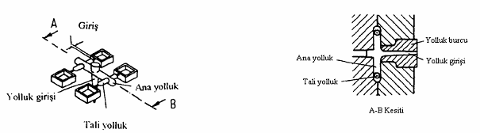
Þekil 30 Yolluk sistemi
Yolluk burcu ergimiþ malzemeyi plastik ünitesinden alýr ve genellikle kendisine dik olan ayýrma yüzeyi boyunca ona kýlavuzluk eder.
Yolluklar, yolluk giriþini parça giriþine veya giriþlerine baðlarlar. Yolluðun ana amacý
özellikle çok kaviteli kalýplarda kavitelerin ayný zamanda ve ayný þartlar (eþ sýcaklýk ve
basýnç) altýnda dolmasýný saðlamaktýr.
Parça giriþleri ise yollukla kavite arasýndaki geçiþi saðlarlar. Yolluðun parçadan kolayca
ayrýlabilmesi ve ayrýldýktan sonra býraktýðý izin parça görünümünü etkilememesi için parça
Yolluk giriþi genellikle yolluk burcu içinde þekillendirilir. Kalýp kapandýktan sonra ve makine plastik ünitesinin lülesi, kalýp ve plastik ünitesi arasýndaki geçiþ noktasýný dýþarýya izole edecek þekilde ileri doðru itildiðinde, malzeme plastik ünitesinden yolluk giriþine doðru akar. Bu olay kalýbýn bu bölgede lokal olarak önemli ölçüde yüklenmesine neden olur ve bu bölgenin diðer kýsýmlara göre daha çabuk aþýnmasýna neden olur. Bu nedenle yolluk burcu çelikten yapýlýp sertleþtirilir ve kalýba insert olarak takýlýr. Böylelikle aþýndýðý zaman kolaylýkla deðiþtirilebilir.
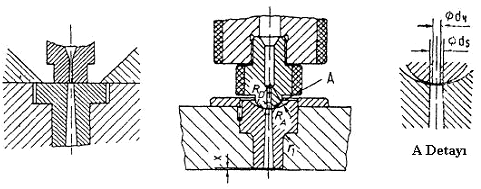
Þekil 31 gösterilen küresel temas yüzeyinin boyutlarý aþaðýdaki genel koþullar çerçevesinde saptanýr.
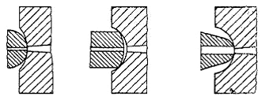
Þekil 32 Kontak bölgesinin doðru ve yanlýþ tasarýmlarý
Yolluk çekiciler kalýp açýldýðýnda plastik ürünle beraber yolluðun ve yolluk salkýmýnýn erkek çekirdek üzerinde kalmasýný saðlamak üzere itici deliðinin bir kýsmýnda ters açý verilerek yaratýlan bölümdür.

Þekil 33 Yolluk çekicinin bulunduða yerde görülen plastik yoðunlaþmasý
Yukarýda bahsedilen plastiðin çekici etrafýnda yoðunlaþmasýný önlemek için gösterildiði gibi deðiþik konfigirasyonlar uygulanabilir. Böylece çekici etrafýnda plastik kütlesinin artmasý önlenir ve bu bölgenin soðuma verimi artmýþ olur.
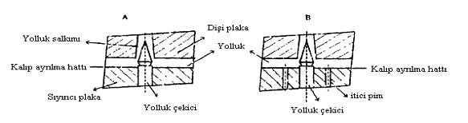
Þekil 34 Sýyýrýcý plakalý çekici B) Ýtici pimlerle beraber çekici uygulamasý
Yolluk çekicilerin sayýsý ve yerleþimi kullanýlan plastik malzemeye baðlýdýr. Tasarýmcý bu sayýyý minimumda tutmaya çalýþmalýdýr. Çünkü ilave her yolluk çekici kalýp maliyetini, iþçiliðini ve süresini arttýracaktýr. Ayrýca kalýp plakasýnda çok sayýda delik açmak plakadan geçirilecek su kanallarýný olumsuz etkileyecektir. Genellikle sert veya tok plastik malzemeler kullanýlýyorsa daha az yolluk çekici veya iticiye ihtiyaç duyulur. Yolluk et kalýnlýðý plastik ürünün et kalýnlýðýndan her zaman daha fazla olduðu için yolluðun geçtiði bölgede aþýrý ýsýnma gözlenecektir. Bu bölgenin ardýndan su kanalý geçirilerek etkili bir soðutma yapýlmalýdýr. Oysa burada kullanýlan yolluk itici veya çekiciler için açýlan delikler istenildiði gibi su kanalý geçirilmesine izin vermeyecektir. Yumuþak veya oldukça esnek plastik kullanýldýðýnda sert, tok plastiðe göre çok daha fazla yolluk çekici kullanmak gerekir. Dengeli yolluk daðýlýmý kalýbýn dolmasýný nasýl etkiliyorsa, dengeli bir yolluk itici sistemi kurmak da plastik ürünün kalýptan dengeli bir þekilde çýkmasý için önem taþýr. Yolluðun kalýptan ürünle beraber uzaklaþtýrýlamamasý kalýbýn güvenliði için büyük tehlike yaratabilir.
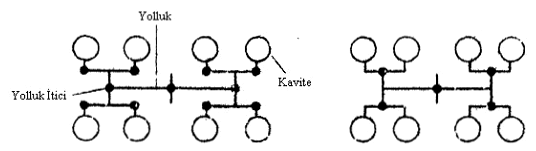
Þekil 35 Yumuþak ve sert malzemeye göre yolluk iticilerinin yerleþimi
Þekil 3.9’de solda yumuþak malzemeye göre, saðda ise daha sert malzemeye göre yolluk iticilerin yerleþimi görülmektedir.
Yolluðun otomatik olarak üründen koparýlýp kalýptan çýkarýlabilmesini saðlayan metotlardan biri de üç plakalý kalýp tasarýmý yapmaktýr, iki plakalý kalýplarda tünel yolluk giriþi kullanýldýðýnda yolluk otomatik olarak üründen kopar. Fakat her ürüne tünel yolluk giriþi yapmak mümkün olmayabilir. Bununla beraber yolluðun otomatik olarak atýlmasý istendiðinde üç plakalý kalýp tasarýmý iyi bir çözüm olacaktýr. (Kamber, 2003)
Yolluk giriþini yolluk burcundan ayýran ancak daha az kullanýlan bir baþka yöntem de
aþaðýdaki þekilde gösterilmiþtir. (Þekil 3.10) Yolluk burcu bir yay tarafýndan sýkýþtýrýlmaktadýr.
Kalýp dolduktan sonra plastik ünitesi lülesi yolluk burcundan ayrýlýr ayrýlmaz yay veya yaylar yolluk burcunu geriye doðru iterek yolluk giriþinden ayrýlmasýný saðlarlar. Þekilde iki farklý tasarým gösterilmektedir. Birincisinde büyük bir yay tek baþýna kullanýlýrken ikincisinde çevresel olarak sýralanmýþ küçük yaylar kullanýlmaktadýr. Bu yöntem sadece plastik ünitesinin vida kýsmýnýn içinde bulunduðu silindirik kýsmýn ileri geri hareket ettiði makinelerde kullanýlabilir.
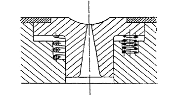
Þekil 36 Yay ile sýkýþtýrýlmýþ yolluk burcu
Kendisinden beklenenleri yerine getirmesi için yolluk sisteminin tasarýmýnda tasarýmcý daha basit veya daha zor olan çeþitli seçeneklere sahiptir. Bu yüzden aþaðýdaki tasarým
çözümlerinden herhangi birini seçebilir.
I. Yolluklar parça üzerinde kalýrlar ve daha sonra kesilirler.
II. Yolluklar parçadan otomatik olarak ayrýlýrlar ve ayrý olarak kalýptan çýkartýlýrlar.
III. Yolluklar parçadan otomatik olarak ayrýlýrlar ancak kalýp içinde kalýrlar.
Yolluklar, yolluk giriþini kavite giriþleri ile kaviteye baðlar. Malzemeyi ergimiþ halde iken ayný halde, ayný sýcaklýkta, ayný basýnçta ve ayný zamanda kavitelere daðýtmalýdýrlar.
Plastikleþmiþ malzeme soðutulmuþ kalýbýn yolluklarýna büyük bir hýzla girer. Kalýp duvarlarýna yakýn olan malzemeden ýsý hýzla çekilir ve malzeme soðuyarak katýlaþýr. Bu durum kanalýn merkezinde akan malzeme için bir ýsý yalýtým tabakasý meydana getirir.
Kaviteyi doldurmak için akan plastik, sýcak akýþkan bir çekirdek haline gelir. Bu sýcakçekirdek parça tamamen katý hale gelene kadar korunmalýdýr. Enjeksiyondan sonraki tutma safhasýndaki tutma basýncý ancak bu halde katýlaþma süresince meydana gelecek olan hacimsel çekmeyi kompanze edebilmek için tam olarak etkiyebilir.
Bu gereksinim yolluðun geometrisini belirler. Malzeme tasarrufu ve soðuma koþullarýndan dolayý yüzey/hacim oraný oldukça küçük olmalýdýr. Yolluðun boyutlarý, parça büyüklüðüne, kalýbýn tasarýmýna ve kalýplanan plastik malzemenin cinsine baðlýdýr. Genel bir kural olarak, artan parça boyutu ve cidar kalýnlýðý ile yolluk kesiti arttýrýlmalýdýr. Büyük kesitler akýþa gösterilen direncin kesit alaný ile ters orantýlý olmasý nedeniyle ince kesitlere göre kalýbýn daha kolay dolmasýný saðlar. Düþük viskoziteye sahip plastikler de daha uzun veya ince kesitli yolluklara (daha uzun akýþ boylarýna) izin verirler.
Bunlarýn yanýnda parçanýn mümkün olduðunca ekonomik üretilme gereksinimi söz konusudur. Yolluk artýk malzeme miktarýný ve parça boyutuna göre büyük ise muhtemelen soðuma zamanýný da etkiler. Bu yüzden gerekli yolluk çapý Hagen-Poiseuille yasasýnýn yardýmý ile de dikkatli bir þekilde hesaplanmalýdýr. Yolluktaki basýnç kaybý da bu þekilde hesaplanabilir.
Yolluk kesitleri
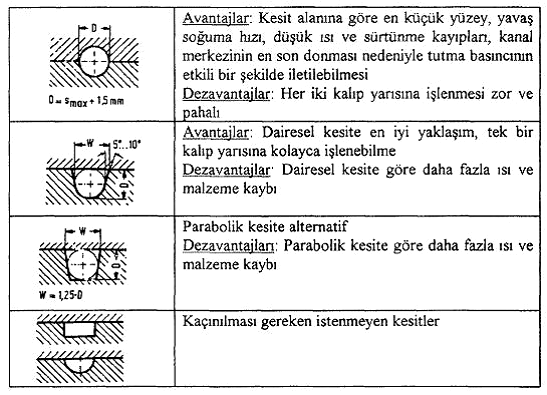
Tablo 1 Yolluk Kesitleri
Yolluðun kesin boyutlarý ve yüzey kalitesi parçanýn kalitesi için olduðu kadar ekonomiklik açýsýndan da önemlidir. Yukarýdaki þekil (Þekil 7.10) en yaygýn kullanýlan yolluk kesitlerini, avantajlarýný ve dezavantajlarýný göstermektedir. Buradan parabolik kesitli yolluðun en uygun kesit olduðu ortaya çýkmaktadýr.
Yolluðun yüzey kalitesi kalýplanan plastiðin cinsine baðlýdýr. Katýlaþarak ýsý yalýtýmý yapan katý kabuðun akan sývý malzeme tarafýndan yerinden alýnýp götürülmemesi için parlatýlmamýþ yolluk yüzeyinin avantaj olduðu düþünülebilir. Ancak PVC, polikarbonat ve poliasetal gibi bazý plastikler için parçada oluþabilecek hatalardan kaçýnmak için yolluk yüzeyinin çok iyi parlatýlmasý hatta krom kaplanmasý gereklidir.
Standart yolluklar doðrudan kalýp plakalarý üzerine açýlýrlar. Bu yüzden sýcaklýklarý kalýp sýcaklýðý ile aynýdýr. Yolluk içindeki malzeme enjeksiyondan sonra katýlaþýr ve her çevrimden sonra parça ile birlikte kalýptan çýkartýlmalýdýr. Termoplastik malzemelerin yolluklarý kýrma makinelerinde kýrýlarak tekrar hammadde olarak kullanýlýrlar.
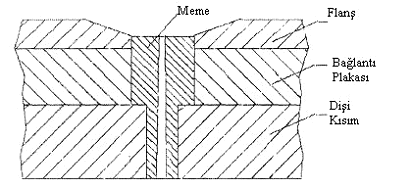
Þekil 37 Kalýba gömülmemiþ meme
Bir termoplastik kalýbýnýn sýcak yolluk sistemi ayrý ve ýsýtýlan bir manifold olarak karakterize edilir. 180 °C den fazla olan sýcaklýðý ile termoplastik malzemenin ergime sýcaklýðý aralýðýndadýr ve bu yüzden ortalama kalýp sýcaklýðýndan 20 ile 120 °C daha sýcaktýr. Manifold içindeki yolluklar ergimiþ malzemeyi makine plastik ünitesi lülesinden kavite giriþlerine kadar sýcaklýk kaybý olmadan taþýrlar.
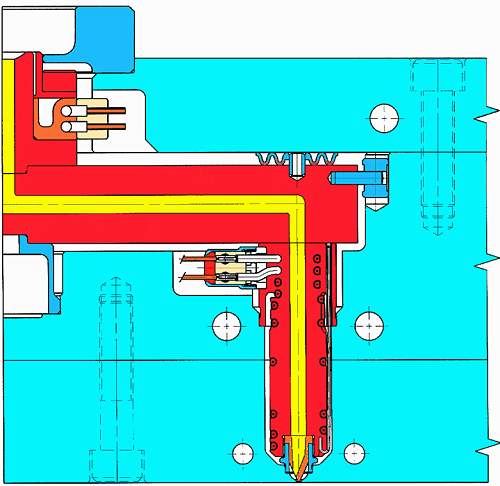
Þekil 38 Sýcak yolluk
|